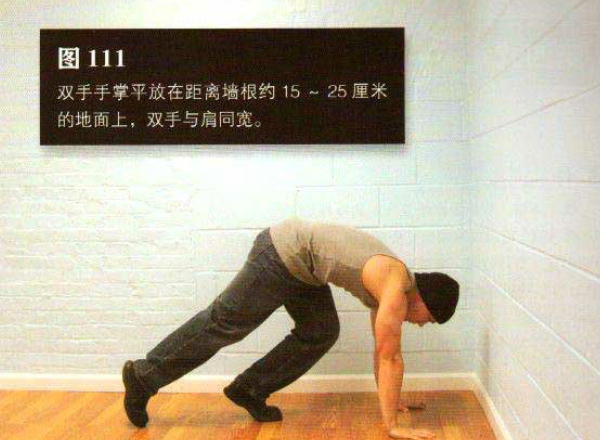
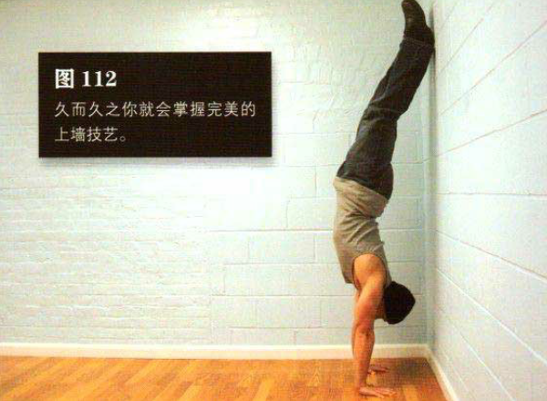

找一面墙，双手手掌平放在距离墙根约 15-25 厘米的地面上，双手与肩同宽。手臂伸直或近乎伸直，膝盖弯曲，撑起身体。提起一条腿的膝盖，让其靠近同侧的肘部（图 111），然后使劲向下蹬地，同时让另一条腿向后上方摆。与此同时，让蹬地的腿也离地，紧随另一条腿向墙壁靠近，手臂保持伸展，双脚脚跟应同时接触墙壁。刚开始练习时，上踢的力量如果过大，你的后背和屁股会猛地撞到墙上，但久而久之你就会掌握完美的上墙技艺。最后，你的手臂应该是直的，身体摆正，背部略向内弓。这就是标准的靠墙倒立姿势（图 112）。
然后反向运动，身体重心慢慢后倾，直到脚尖再次接触地面。
保持这一姿势一段时间，整个过程中保持正常呼吸。
初级标准：30 秒
中级标准：1 分钟
高级标准：2 分钟